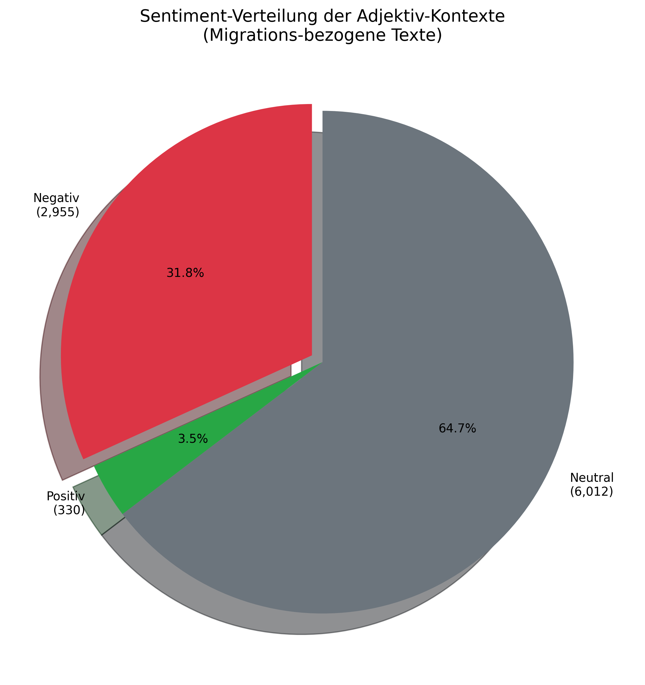
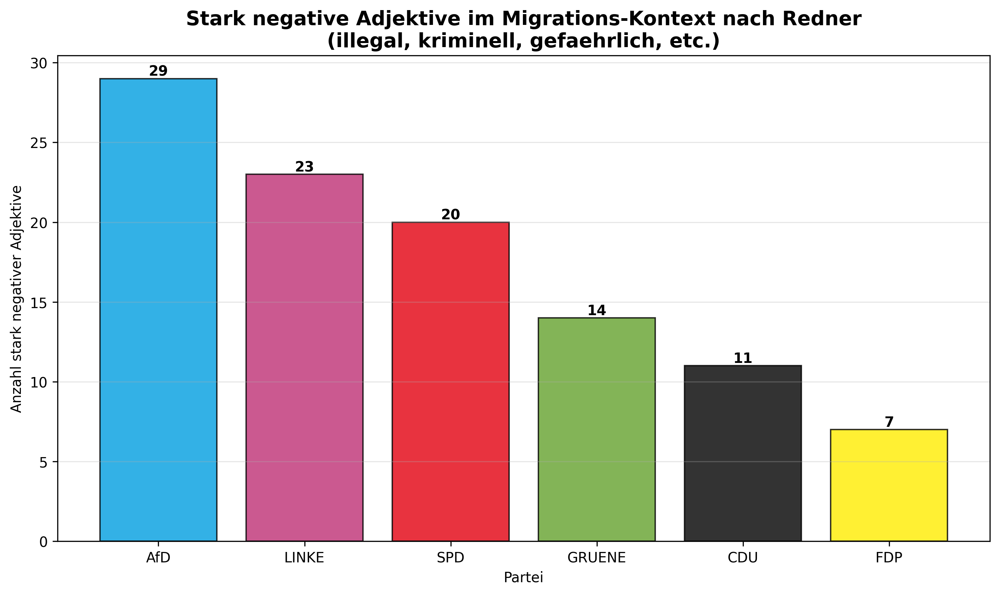
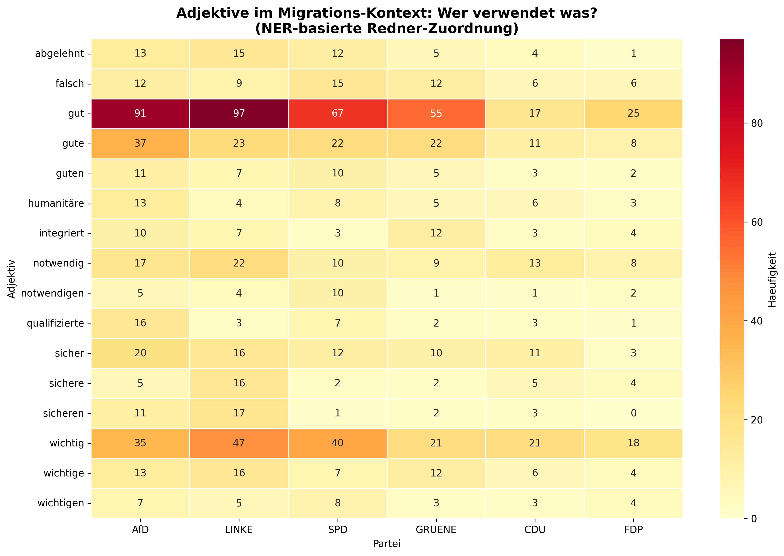
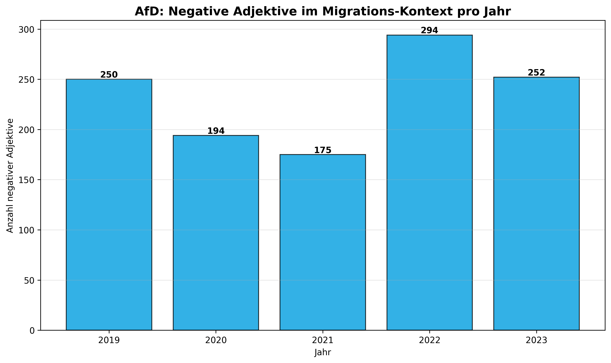
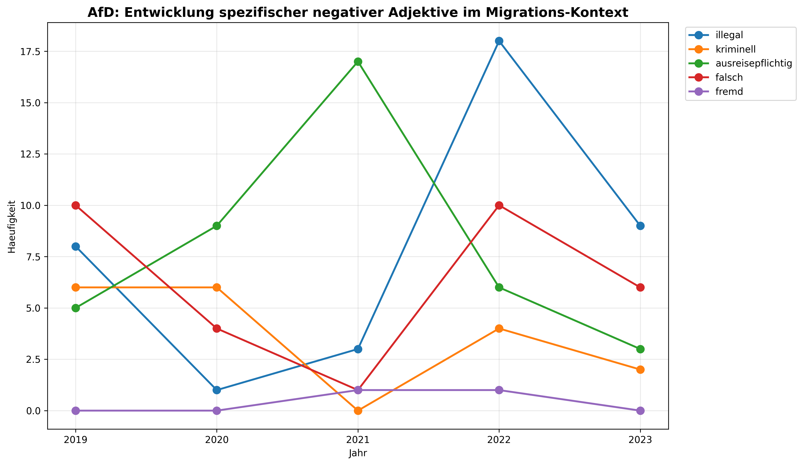
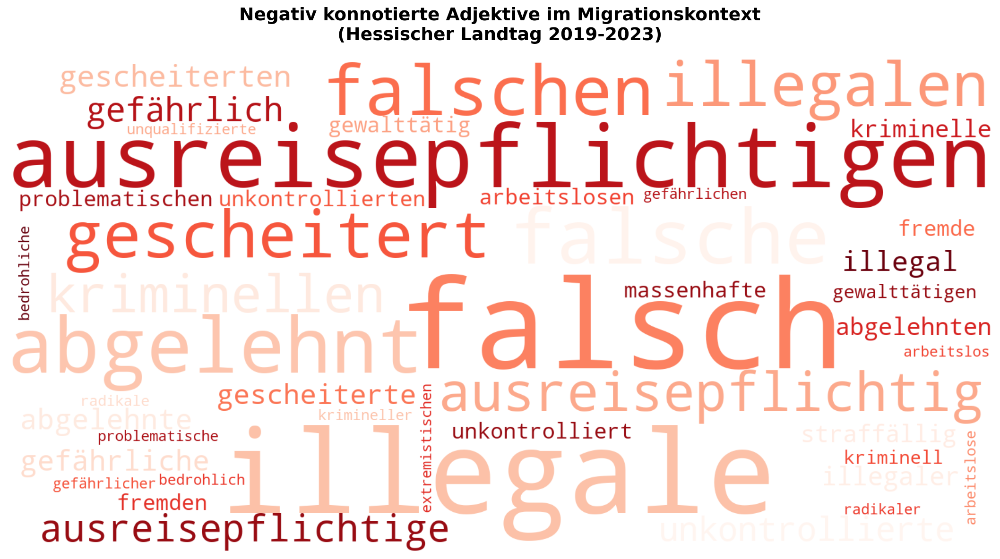
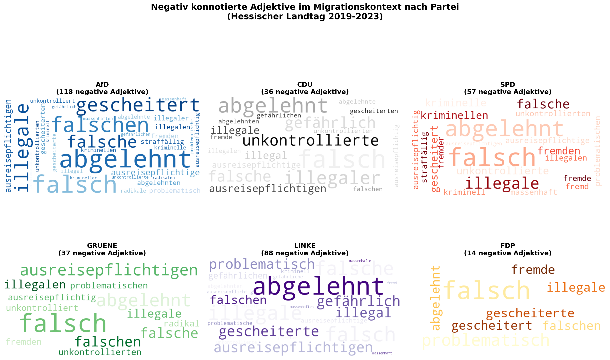

Uebersicht: Hate Speech Klassifikation
11.950
Dokumente gesamt
3.169
Migrations-bezogen
121
Als HATE klassifiziert
3,8%
Hate-Rate (Migration)
9.297
Adjektiv-Vorkommen
2.955
In negativem Kontext
Klassifikations-Ergebnisse
Label-Verteilung
HATE vs NON_HATE Klassifikation aller Dokumente.

Konfidenz-Scores
Verteilung der BERT-Modell Konfidenz.

Negative Adjektive im Migrations-Kontext
BERT Sentiment-Analyse
Adjektive in Verbindung mit Migrations-Begriffen, klassifiziert mit german-sentiment-bert.
9.297
Adjektiv-Vorkommen
2.955
In negativem Kontext
31,8%
Negativ-Anteil
Top Negative Adjektive
Haeufigste Adjektive in negativem Kontext.

Sentiment-Verteilung
Anteil negativ/positiv/neutral.

Analyse nach Parteien
Wer verwendet welche Adjektive?
NER-basierte Zuordnung nach Redner-Partei.
| Partei | Reden | Adjektive | Top 3 |
|---|---|---|---|
| AfD | 338 | 443 | gut, gute, wichtig |
| LINKE | 336 | 401 | gut, wichtig, gute |
| SPD | 194 | 278 | gut, wichtig, gute |
| GRUENE | 133 | 208 | gut, gute, wichtig |
| CDU | 117 | 152 | wichtig, gut, notwendig |
| FDP | 77 | 109 | gut, wichtig, gute |
Adjektive nach Redner-Partei

Stark negative Adjektive

Heatmap: Adjektive pro Partei

Zeitliche Entwicklung (AfD)
AfD: Entwicklung 2019-2023
2019
250 Adjektive
2020
194 Adjektive
2021
175 Adjektive
2022
294 (Peak)
2023
252 Adjektive
Adjektive pro Jahr

Entwicklung: illegal, kriminell, etc.

Word Clouds
Negativ konnotierte Adjektive (Gesamt)
Word Cloud aller negativ konnotierten Begriffe im Migrationskontext.

Negative Adjektive nach Partei
Word Clouds aufgeteilt nach Partei des Redners.
